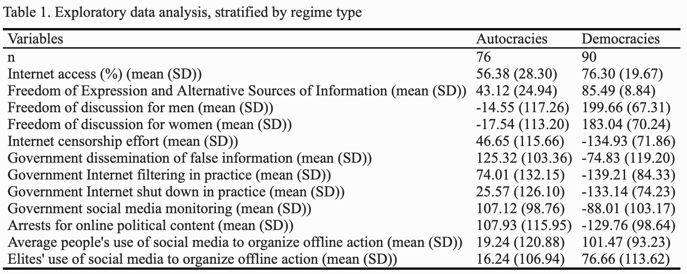
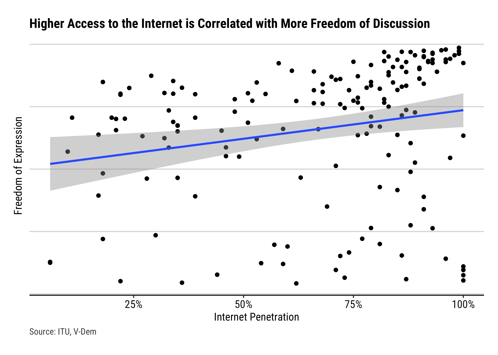
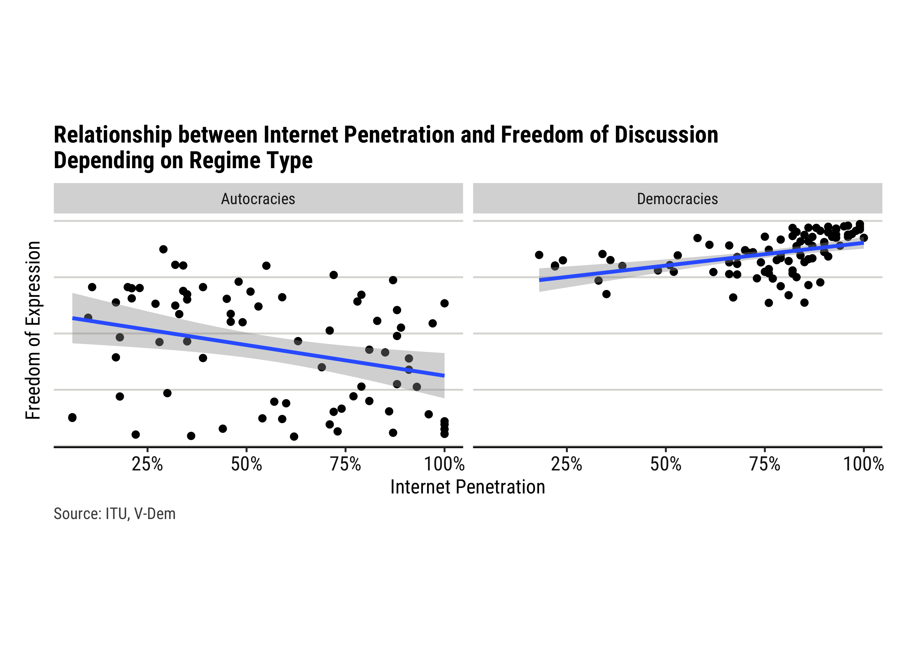

A growing body of literature has been interested in the effect of the rise and diffusion of new technologies on international relations. One particular topic of contention is the relationship between internet use, especially activity on social networks, and civil liberties.
Social media platforms have fundamentally transformed the landscape of social and political movements. They have allowed individuals to bypass traditional gatekeepers of information, such as the mainstream media, and connect with each other directly. This has enabled dissidents to spread information and organize more quickly and effectively than ever before. The other side of the coin is that they also enabled certain governments to better monitor and gather information, potentially putting activists at risk.
Through a combination of data analysis and case studies, this report seeks to further uncover the nature of the effect of the development of the internet and social media on freedom of speech and activism. More precisely, the research question is What is the effect of Internet access on freedom of discussion and activism? And how does this effect differ across regime types?
Dataset & Methodology
For this research project, a dataset covering 166 states was compiled.
Its first variable is internet access, which corresponds to the percentage of the population having access to the Internet. This data was gathered from the International Telecommunication Union (ITU), which is the UN specialized agency for information and communications technologies, and the official source for global ICT statistics.
Data on the political environment of the internet and social media, and more general indicators for freedom of discussion, was collected from the Varieties of Democracy Dataset, version 13. V-Dem indicators are measured using surveys conducted by experts both in and out of the country of interest. The responses are measured on an ordinal scale, and the assessments of all the experts are aggregated using a special measurement model, and the variable is converted to a continuous variable.
Finally, V-Dem’s Regimes of the World (RoW) variable, created in a similar way as the other indicators with an aggregation of surveys by experts, was used for the classification of regime types into “Democracies” and “Autocracies”.
Findings
First, here are some descriptive statistics:
Code
table_html <- table_df %>%kbl(caption ="Table 1. Exploratory data analysis, stratified by regime type") %>%kable_classic(full_width = F, html_font ="Times New Roman")save_kable(table_html, file ="report_files/img/table1.html", self_contained = T)
 Unsurprisingly, democracies display both higher internet access and freedom of discussion on average. The standard deviation of both measures are higher for autocracies, indicating more diversity within this group. Autocracies also tend to display high values for disinformation, censorship, and social media monitoring indicators.
Another interesting difference is in the use of social media to organize offline action. In both autocracies and democracies, the “average people” do so more often than governing “elites”, following the hypothesis that social media can be used as a tool to offset the balance of power.
For a first high-level overview, we used the “Freedom of Expression and Alternative Sources of Information index” of the VDem dataset. This variable quantifies the extent to which governments respect press and media freedom, the freedom of ordinary people to discuss political matters at home and in the public sphere, as well as the freedom of academic and cultural expression.
Code
freedom_speech_internet <-ggplot(df_reduced, aes(x = most_recent_perc, y = v2x_freexp_altinf))+geom_point()+geom_smooth(method ="lm")+theme(aspect.ratio =4/7,text=element_text(family="Roboto Condensed"),plot.margin =margin(t =0, r =0.5, b =0, l =0.5, unit ="cm"),plot.background =element_rect(fill ="white"),panel.background =element_rect(fill ="white"),panel.grid.major.x =element_blank(),panel.grid.minor.x =element_blank(),panel.grid.major.y =element_line(color ="#dcdbd8"),panel.grid.minor.y =element_blank(),plot.title =element_text(size =rel(1.2), hjust =0, face ="bold"),plot.caption =element_text(hjust =0, size =9, colour ="#4B4B4B"),axis.text =element_text(size =rel(1), color ="gray8"),axis.text.y =element_blank(),axis.line.x =element_line(color ="gray8"),axis.ticks.y =element_blank())+scale_x_continuous(name ="Internet Penetration",labels = scales::percent_format(accuracy =1))+scale_y_continuous(name ="Freedom of Expression")+labs(title ="Higher Access to the Internet is Correlated with More Freedom of Discussion",caption="Source: ITU, V-Dem")freedom_speech_internet

From this simple scatterplot, and the linear regression fitted to the data, it seems that countries with higher levels of Internet penetration are associated with higher levels of freedom of discussion. However, an important omitted variable bias could emerge when ignoring regime type. Indeed, democracies, usually characterized by high levels of freedom of discussion, are also often more developed than authoritarian regimes, and therefore have higher Internet penetration rates on average.
The next step taken to analyze the relationship between Internet penetration and freedom of discussion is to take regime type into account.
Code
freedom_speech_internet_facet <-ggplot(df_reduced, aes(x = most_recent_perc, y = v2x_freexp_altinf))+geom_point()+facet_wrap(~ regime_type)+geom_smooth(method ="lm")+theme(aspect.ratio =4/7,text=element_text(family="Roboto Condensed"),plot.margin =margin(t =0, r =0.5, b =0, l =0.5, unit ="cm"),plot.background =element_rect(fill ="white"),panel.background =element_rect(fill ="white"),panel.grid.major.x =element_blank(),panel.grid.minor.x =element_blank(),panel.grid.major.y =element_line(color ="#dcdbd8"),panel.grid.minor.y =element_blank(),plot.title =element_text(size =rel(1.2), hjust =0, face ="bold"),plot.caption =element_text(hjust =0, size =9, colour ="#4B4B4B"),axis.text =element_text(size =rel(1), color ="gray8"),axis.text.y =element_blank(),axis.line.x =element_line(color ="gray8"),axis.ticks.y =element_blank())+scale_x_continuous(name ="Internet Penetration",labels = scales::percent_format(accuracy =1))+scale_y_continuous(name ="Freedom of Expression")+labs(title ="Relationship between Internet Penetration and Freedom of Discussion \nDepending on Regime Type",caption="Source: ITU, V-Dem")freedom_speech_internet_facet

This faceted graph carries some very interesting information! It suggests that the effect of Internet penetration on freedom of discussion is conditional on regime type. In countries classified as democratic, higher access to the Internet seems to be correlated with an increase in freedom of discussion. On the other hand, countries classified as autocracies display an apparent negative relationship between Internet penetration and freedom of discussion.
To confirm these first observations, a linear regression model including an interaction term was included.
Code
library(sjPlot)model1 <-lm(data = df_renamed, `Freedom of Expression and Alternative Sources of Information`~`Internet access (%)`*`Regime type`)tab_model(model1)
Freedom of Expression and Alternative Sources of Information
Predictors
Estimates
CI
p
(Intercept)
70.05
55.66 – 84.44
<0.001
Internet access (%)
0.20
0.02 – 0.38
0.030
Regime type [Autocracies]
-11.58
-28.40 – 5.24
0.176
Internet access (%) × Regime type [Autocracies]
-0.47
-0.70 – -0.25
<0.001
Observations
166
R2 / R2 adjusted
0.626 / 0.619
An interaction effect occurs when an independent variable has a different effect on the outcome depending on the value of another independent variable. In this case, changes in the access to the internet do not affect freedom of expression in the same way in democracies and in autocracies, in a statistically significant way.
Freedom of expression and Alternative Sources of Information is measured from 0 to 100, from low to high. On average, autocracies show 11.58 points less than democracies in this indicator. However, this difference needs to be interpreted with caution, as the p-value is equal to 0.176. More informative is the statistical significance of the interaction term, which means that changes in the access to the Internet do not affect freedom of expression in the same way in democracies and in autocracies.
For each percentage point increase in Internet access, democracies gain 0.20 in freedom of expression, while autocracies lose (0.20 x – 0.47) 0.094 points of freedom of speech on average. While this relationship gives an informative answer on the research question, this coefficient is almost negligible given the scale of the variable measured (0-100).
Although limited in variables, this initial exploratory data analysis yielded interesting results that can be explored using further analysis and data visualization.
In democracies: A Platform to Share Opinions and Speak Out in Safety…
In democracies, social media has provided a platform for individuals to share their opinions and engage in political discussions, allowing for greater freedom of expression and a more direct connection with their representatives. The inter-connectivity and anonymity provided by the Internet can also empower groups that tend to be discriminated against to express themselves.
Code
df_democracies <- df_renamed%>%filter(`Regime type`=="Democracies")model_democracies_men <-lm(data = df_democracies, `Freedom of discussion for men`~`Internet access (%)`+`Regime classification`)model_democracies_women <-lm(data = df_democracies, `Freedom of discussion for women`~`Internet access (%)`+`Regime classification`)tab_model(model_democracies_men, model_democracies_women)
Freedom of discussion for men
Freedom of discussion for women
Predictors
Estimates
CI
p
Estimates
CI
p
(Intercept)
108.27
54.73 – 161.81
<0.001
97.58
43.26 – 151.91
0.001
Internet access (%)
1.00
0.24 – 1.76
0.010
0.85
0.08 – 1.62
0.031
Regime classification [Liberal democracy]
41.39
10.67 – 72.11
0.009
56.28
25.11 – 87.46
0.001
Observations
90
90
R2 / R2 adjusted
0.273 / 0.257
0.313 / 0.297
These two linear models help reach two main conclusions:
As access to the internet increases, the freedom of expression in democracies for both men and women increase significantly, with liberal democracies having a higher level of freedom of discussion than electoral democracies.
Holding democracy types constant, men’s level of freedom of discussion increases more than women’s when internet access grows.
… That can also Breed Discrimination
The reason for this difference is that social media can be a double edged sword that can be used as a tool to disempower minority groups and women.
Social media has often been associated with discrimination and polarization, with algorithms and echo chambers leading to the amplification of extreme viewpoints and the spread of misinformation. Such actions can lead to the exacerbation of animosity between various groups. In the absence of any consequences for publicizing discriminatory or violent views online, this may embolden malicious actors to carry out direct attacks against individuals whom they wish to sabotage or discredit.
Code
df_democracies$countries_ordered <-factor(df_democracies$Countries, levels = df_democracies$Countries[rev(order(df_democracies$`Freedom of discussion for men`))])dumbbel_plot_speech <-ggplot(df_democracies%>%filter(`Regime classification`=="Liberal democracy"))+geom_segment(aes(x =`Freedom of discussion for women`, y = countries_ordered,xend =`Freedom of discussion for men`,yend = countries_ordered),color ="#aeb6bf",linewidth =3.5, alpha = .5) +geom_point(aes(x =`Freedom of discussion for men`, y = countries_ordered, color ="Men"), size =3) +geom_point(aes(x =`Freedom of discussion for women`, y = countries_ordered, color ="Women"), size =3) +scale_color_manual(values =c("Men"="blue", "Women"="red"), labels =c("Freedom of Discussion for Men", "Freedom of Discussion for Women")) +theme(text=element_text(family="Roboto Condensed"),plot.background =element_rect(fill ="white"),panel.background =element_rect(fill ="white"),panel.grid.major.x =element_blank(),panel.grid.minor.x =element_blank(),panel.grid.major.y =element_line(color ="#dcdbd8"),panel.grid.minor.y =element_blank(),plot.title =element_text(size =rel(1.2), hjust =0, face ="bold"),plot.caption =element_text(hjust =0, size =8, colour ="#4B4B4B"),axis.text =element_text(size =rel(0.7), color ="gray8"),axis.title.y =element_blank(),axis.title.x =element_text(size =10),axis.line.x =element_line(color ="gray8"),axis.ticks.y =element_blank(),legend.position =c(0.2, 0.1),legend.title =element_blank(),legend.key =element_blank(),legend.text =element_text(size =9),legend.margin =margin(0, 0, 0, 0))+labs(title ="Gender Differences of Freedom of Discussion in Liberal Democracies ",x ="Freedom of Discussion",caption="Source: ITU, V-Dem")dumbbel_plot_speech
This plot shows the difference in freedom of discussion among women and men in liberal democracies. While many do not display a difference, three of the five countries with the highest freedom of discussion for men are also characterized by a large difference between both genders.
In Autocracies: a Tool for Digital Repression…
At both a domestic and international level, authoritarian governments are attempting to break up the open internet and create a network of oppressive enclaves. This is resulting in an increasing number of governments controlling what individuals can access and share online, by blocking foreign websites, holding onto personal data, and centralizing their technical infrastructure. Consequently, internet freedom globally has decreased for the 12th year in a row.
Digital repression in many countries has increased, coinciding with wider crackdowns on human rights. Russia, Myanmar, Libya, and Sudan experienced the most significant declines in internet freedom. Governments are blocking political, social, or religious content, often targeting information sources based outside their borders, leading to record-high online censorship. In these cases, the internet becomes a tool for disinformation and propaganda, with governments using it to manipulate public opinion and suppress dissent.
… That can also Foster Social Change
In autocratic regimes, and despite the dangers such actions bears, the internet has also been a platform for social change. Citizens in authoritarian states often use it to document and expose human rights abuses, corruption, and government repression. Social media has allowed activists and ordinary citizens to share videos, photos, and other evidence of abuses, bypassing traditional state-controlled media outlets. This has helped to bring international attention to human rights issues and put pressure on authoritarian governments to change their behavior.